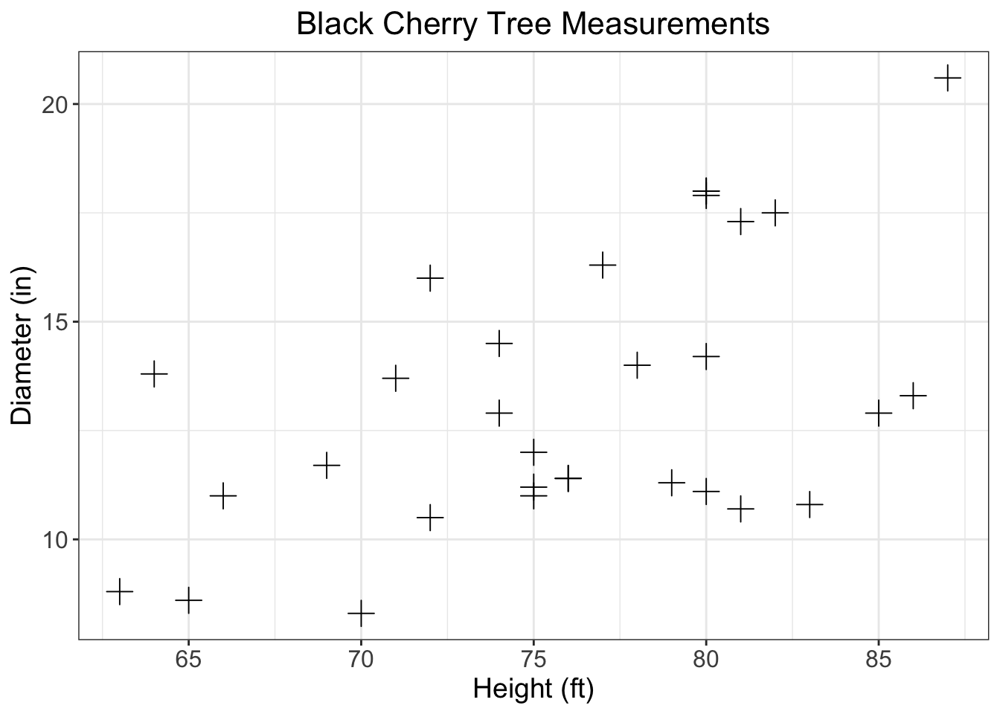
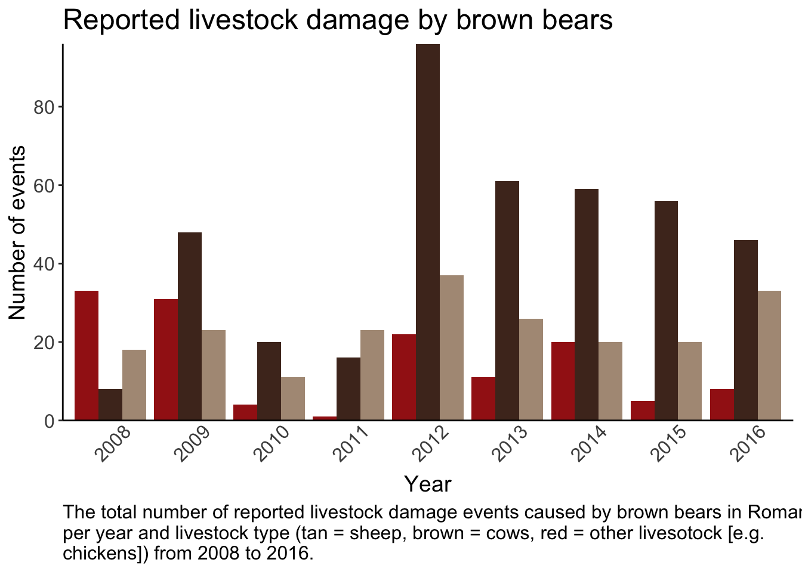

Please email me a copy of your R script for this assignment by end of day Friday March 29th with your first and last name followed by assignment 3 as the file name (e.g. ‘marissa_dyck_assignment4.R’)
You should always be following best coding practices (see Intro to R module 1) but especially for assingment submissions. Please make sure each problem has its own header so that I can easily navigate to your answers and that your code is well organized with spaces as described in the best coding practices section and comments as needed.
Using the built in PlantGrowth dataset make a plot that meets the following requirements
Boxplot of weight for each group
Filled by group (choose some greyscale colors) and outlined in black
Informative axis titles and text
Readable text size
No gridlines
No legend
plant_boxplot <- ggplot(PlantGrowth, aes(x = group, y = weight)) +
# add boxplots filled by group
geom_boxplot(aes(fill = group),
color = 'black') + # outline in black
labs(x = 'Treatment group',
y = 'Weight (g)') + # I am just guessing it is in grams since the R documentation did not say
# select greyscale colors
scale_fill_manual(values = c('#DDDDDD', '#888888', '#444444')) +
# change axis labels
scale_x_discrete(labels = c('Control', 'Treatment 1', 'Treatment 2')) +
# select theme with no gridlines
theme_classic() +
# remove legend and increase text size
theme(legend.position = 'NONE',
axis.text = element_text(size = 12),
axis.title = element_text(size = 14)) Using the built in trees data make a plot that meets the following requirements
Scatterplot with girth as a function of height
Change the points plus signs
Informative axis titles and text
Readable text size
Informative title that is centered at the top
axis with breaks every 5 units starting at a number divisible by 5
Gridlines
# specify data and variables
trees_scatterplot <- ggplot(trees, aes(x = Height, y = Girth)) +
# add points as plus signs
geom_point(shape = 3,
size = 4) +
# create informative labels and title
labs(x = 'Height (ft)',
y = 'Diameter (in)',
title = 'Black Cherry Tree Measurements') +
# add breaks based on range of data
scale_x_continuous(breaks = seq(60, 85, by = 5)) +
scale_y_continuous(breaks = seq(5, 20, by = 5)) +
# choose theme with gridlines
theme_bw() +
# adjust text and title
theme(plot.title = element_text(hjust = 0.5,
size = 16),
axis.text = element_text(size = 12),
axis.title = element_text(size = 14))For the next three problems you will be using the ‘bear_2008_2016.csv’ data
Please read in the data according to the following guidelines
Save it as ‘bears’
Set all variable names to lowercase
Keep only points where damage is 1
Keep only the following columns (damage, year, targetspp, bear_abund, landcover_code, altitude, human_population, disto_to_forest, and dist_to_town)
*You may have to do some other data manipulation later on for each graph
# read in bear data
bears <- read.csv('data/raw/bear_2008_2016.csv') %>%
# set column names to lowercase
set_names(
names(.) %>% # the period here is a placeholder for the data it tells R to use the element before the last pipe (e.g., turtles.df)
tolower()) %>%
# select only damage points
filter(damage == 1) %>%
# select specified columns
select(damage, year, targetspp, bear_abund:dist_to_town)
str(bears)## 'data.frame': 756 obs. of 9 variables:
## $ damage : int 1 1 1 1 1 1 1 1 1 1 ...
## $ year : int 2008 2008 2008 2008 2008 2008 2008 2008 2008 2008 ...
## $ targetspp : chr "bovine" "bovine" "ovine" "ovine" ...
## $ bear_abund : int 38 38 40 40 36 22 40 56 56 25 ...
## $ landcover_code : int 211 231 324 324 321 321 112 112 112 112 ...
## $ altitude : int 558 608 570 570 1410 1068 516 533 553 635 ...
## $ human_population: int 10 0 0 0 0 0 609 431 39 367 ...
## $ dist_to_forest : num 649.3 361.8 79.2 82.5 105.7 ...
## $ dist_to_town : num 613 843 5953 5950 7190 ...# filter data to only damage pointsCreate a plot using the bear data so it meets the following criteria
Bar graph showing the total number of livestock events per year per livestock type
Bars colored by livestock type (manually set the colors)
Informative title, caption, and axis with readable text size
y axis breaks every 20
No ticks on x - axis and years at a 45 degree angle
no legend
No gridlines and only borders on the left and bottom of graph
# mutate data so year and targetspp are factors
bears_summary <- bears %>%
# change variables to factor
mutate(year = as.factor(year),
targetspp = as.factor(targetspp))
bear_damage_bargraph <- ggplot(bears_summary, aes( x = year)) +
# add bars
geom_bar(aes(fill = targetspp),
position = position_dodge()) +
# specify colors and labels
scale_fill_manual(name = 'Livestock type',
values = c('#A31E17', '#4F3124', '#AF9985'),
labels = c('Other', 'Cows', 'Sheep')) +
scale_y_continuous(expand = c(0,0),
breaks = seq(0, 80, by = 20)) +
# add labels, caption, and title
labs(x = 'Year',
y = 'Number of events',
title = 'Reported livestock damage by brown bears',
caption = str_wrap('The total number of reported livestock damage events caused by brown bears in Romania per year and livestock type (tan = sheep, brown = cows, red = other livesotock [e.g. chickens]) from 2008 to 2016.',
width = 90)) +
theme_classic() +
theme(axis.ticks.x = element_blank(),
axis.text.x = element_text(size = 12,
angle = 45,
vjust = 0.7),
axis.text.y = element_text(size = 12),
axis.title = element_text(size = 14),
plot.title = element_text(size = 18),
legend.position = 'NONE',
plot.caption = element_text(size = 12,
hjust = 0))For this problem you’ll need to make a change to the data
Then you will need to make two graphs using this new column
Grouped landcover type and dist_to_forest
Grouped landcover type and dist_to_town
Then combine them into one plot with a common legend.
The graphs should all meet the following criteria
Raw data plotted hint: use geom_jitter() to
avoid having all points stacked on top of eachother
Points shaped and colored by targetspp
manually set the color hint to get one legend per plot you will also need to manually set the shape using the same name and labels
Informative and readable axis and text
# create vectors for landcover types
art_surfaces <- c(112,121,131)
ag <- c(211,221,222, 242,243)
open <- c(231, 321)
forest <- c(311,312,313, 324)
bears_cows <- bears %>%
# keep only data for cows
#filter(targetspp == 'bovine') %>%
# combine landcover types using case_when
mutate(landcover_grouped = case_when(landcover_code %in% art_surfaces ~ 'art_surfaces',
landcover_code %in% ag ~ 'ag',
landcover_code %in% open ~ 'open',
landcover_code %in% forest ~ 'forest'))
str(bears_cows)## 'data.frame': 756 obs. of 10 variables:
## $ damage : int 1 1 1 1 1 1 1 1 1 1 ...
## $ year : int 2008 2008 2008 2008 2008 2008 2008 2008 2008 2008 ...
## $ targetspp : chr "bovine" "bovine" "ovine" "ovine" ...
## $ bear_abund : int 38 38 40 40 36 22 40 56 56 25 ...
## $ landcover_code : int 211 231 324 324 321 321 112 112 112 112 ...
## $ altitude : int 558 608 570 570 1410 1068 516 533 553 635 ...
## $ human_population : int 10 0 0 0 0 0 609 431 39 367 ...
## $ dist_to_forest : num 649.3 361.8 79.2 82.5 105.7 ...
## $ dist_to_town : num 613 843 5953 5950 7190 ...
## $ landcover_grouped: chr "ag" "open" "forest" "forest" ...# create vectors for plot colors and labels
spp_colors <- c('#A31E17', '#4F3124', '#AF9985')
spp_shapes = c(17, 16, 15)
spp_labels <- c('Other', 'Cows', 'Sheep')
# plot 1
# specify data and variables
plot_5.1 <- ggplot(bears_cows, aes(x = landcover_grouped, y = dist_to_forest)) +
# add points
geom_jitter(aes(color = targetspp,
shape = targetspp),
width = 0.4, # this changes the amount of 'jitter'
alpha = 0.6, # this sets opacity
size = 2) +
# manually set colors
scale_color_manual(name = 'Livestock type',
values = spp_colors,
labels = spp_labels) +
scale_shape_manual(name = 'Livestock type',
values = spp_shapes,
labels = spp_labels) +
scale_x_discrete(labels = c('Agriculture', 'Artifical', 'Forest', 'Open')) +
# informative labels
labs(x = 'Landcover type',
y = 'Distance to forest (m)') +
# add theme elements
theme_bw() +
theme(axis.text = element_text(size = 12),
axis.title = element_text(size = 14),
legend.text = element_text(size = 12),
legend.title = element_text(size = 14))
# plot 2
# specify data and variables
plot_5.2 <- ggplot(bears_cows, aes(x = landcover_grouped, y = dist_to_town)) +
# add points
geom_jitter(aes(color = targetspp,
shape = targetspp),
width = 0.4, # this changes the amount of 'jitter'
alpha = 0.6, # this sets opacity
size = 2) +
# manually set colors
scale_color_manual(name = 'Livestock type',
values = spp_colors,
labels = spp_labels) +
scale_shape_manual(name = 'Livestock type',
values = spp_shapes,
labels = spp_labels) +
scale_x_discrete(labels = c('Agriculture', 'Artifical', 'Forest', 'Open')) +
# informative labels
labs(x = 'Landcover type',
y = 'Distance to town (m)') +
# add theme elements
theme_bw() +
theme(axis.text = element_text(size = 12),
axis.title = element_text(size = 14),
legend.text = element_text(size = 12),
legend.title = element_text(size = 14))
plot_combined <- ggarrange(plot_5.1, plot_5.2,
common.legend = TRUE)
str(bears)## 'data.frame': 756 obs. of 9 variables:
## $ damage : int 1 1 1 1 1 1 1 1 1 1 ...
## $ year : int 2008 2008 2008 2008 2008 2008 2008 2008 2008 2008 ...
## $ targetspp : chr "bovine" "bovine" "ovine" "ovine" ...
## $ bear_abund : int 38 38 40 40 36 22 40 56 56 25 ...
## $ landcover_code : int 211 231 324 324 321 321 112 112 112 112 ...
## $ altitude : int 558 608 570 570 1410 1068 516 533 553 635 ...
## $ human_population: int 10 0 0 0 0 0 609 431 39 367 ...
## $ dist_to_forest : num 649.3 361.8 79.2 82.5 105.7 ...
## $ dist_to_town : num 613 843 5953 5950 7190 ...